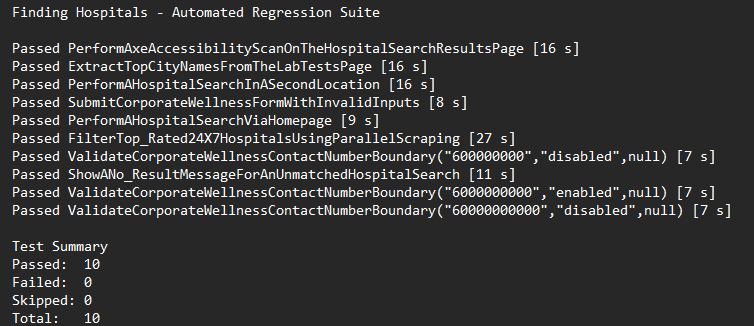
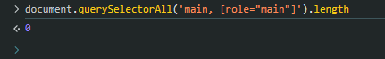
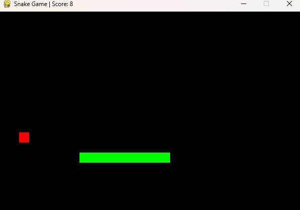
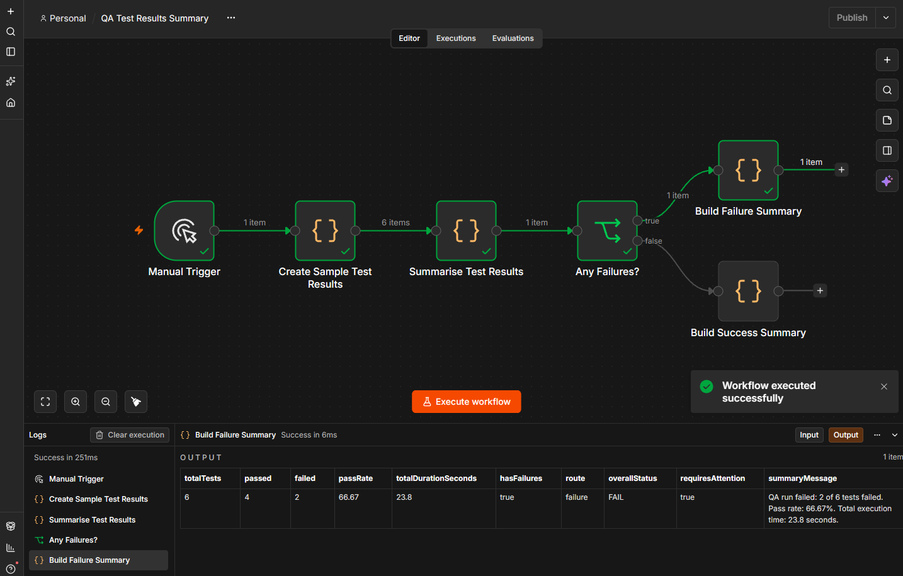
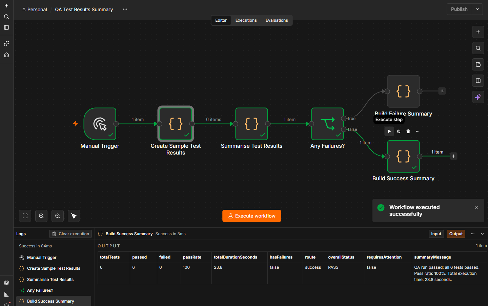

QA & Testing
Manual testing, test planning, exploratory testing, regression testing, defect investigation and evidence collection.
QA · Test Automation · Software Development
I am developing practical experience across manual QA, automated testing, accessibility, Python, SQL and workflow automation through hands-on portfolio projects.
About
I am building practical experience in software quality assurance, test automation and software development. My portfolio focuses on work that I have personally tested, investigated and can explain.
I enjoy breaking larger problems into testable scenarios, investigating unexpected behaviour and improving projects through clear evidence, documentation and regression testing.
Skills
Manual testing, test planning, exploratory testing, regression testing, defect investigation and evidence collection.
C#, Selenium WebDriver, NUnit, Reqnroll/BDD, Page Object Model and automated accessibility checks with Axe.
Python, JavaScript, HTML, CSS, SQL and Git/GitHub version control.
Jira, Chrome DevTools, n8n, Microsoft Access and structured technical documentation.
Featured Projects
Each project focuses on practical work I have completed, tested and documented.
QA Automation


Extended and adapted an existing Selenium and NUnit training framework into a broader QA portfolio project with manual testing, BDD regression automation, accessibility investigation, Jira evidence and release documentation.
Python

Improved an academic Pygame project by handling movement edge cases, making food spawning safer, separating testable logic and adding automated regression tests.
SQL & Data
Simplified relationship structure used when validating the SQL joins.
Reviewed and validated an academic Microsoft Access database, corrected SQL joins using the real relationship structure, investigated missing customer links and created a privacy-safe SQL portfolio version.
Workflow Automation


Built an n8n workflow that processes synthetic QA results, calculates summary metrics and routes execution to separate success or failure outputs.
QA Process
My portfolio work follows a practical process from understanding the application through testing, investigation, automation and release communication.
Review the application, user journeys, risks, existing framework and expected behaviour before changing anything.
Create positive, negative, boundary and exploratory test coverage with clear expected results and evidence requirements.
Run tests, collect evidence and compare the actual behaviour with the expected result instead of assuming a failure is a defect.
Reproduce unexpected behaviour, use browser tools and supporting evidence, and distinguish application issues from test or environment problems.
Select repeatable regression cases with clear assertions, including boundary values, positive variations and negative paths.
Document findings, regression results, limitations, troubleshooting information and release status so the evidence can be reviewed clearly.
Contact
Visit my GitHub profile to see my development activity and portfolio work.